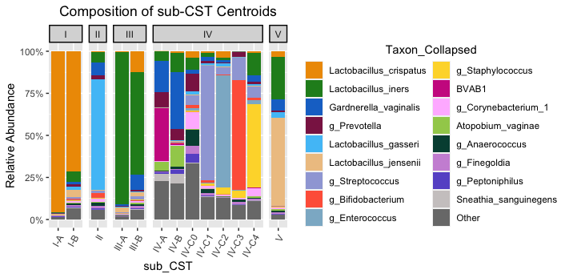

install.packages(c("tidyverse", "cowplot", "gtsummary", "ggdendro", "ggdist", "ggforce","ggplot2movies", "ggrepel", "ggridges", "ggthemes", "colorspace", "patchwork", "quarto"))Generating CSTs with Valencia
Introduction
The goal of this tutorial is to show the current best-practice way to assign CSTs to your human cervicovaginal 16S data. This tutorial assumes you have a phyloseq object that contains the ASVs for your samples.
Valencia compares your 16S data to a set of curated centroid communities and determines which one each of your samples is closest to.

Installation
Install R, RStudio
Follow the instructions on the Durban workshop series website.
Install R dependencies
After you’ve installed the packages on there, you can also install phyloseq and microViz:
if (!requireNamespace("BiocManager", quietly = TRUE)) install.packages("BiocManager")
BiocManager::install(c("phyloseq", "microbiome", "ComplexHeatmap"), update = FALSE)
install.packages(
"microViz",
repos = c(davidbarnett = "https://david-barnett.r-universe.dev", getOption("repos"))
)Install conda for package management
Check if you have conda installed:
Open a terminal
Type
which condaIf it says
conda not foundor nothing shows up, run the following:
cd ~;
curl -L -O "https://github.com/conda-forge/miniforge/releases/latest/download/Mambaforge-$(uname)-$(uname -m).sh";
bash Mambaforge-$(uname)-$(uname -m).sh;- When prompted agree to the lisence with
yesand ask it to add itself to your shell startup withyes. - Close and reopen your terminal.
If you conda is already installed, run the following to ensure you have the most recent version:
conda update conda && conda install mamba -n base -c conda-forgeInstall SpeciateIT and Valencia
Make a new conda environment for these pieces of software:
mamba create -n speciateit_valencia -c conda-forge python pandasThen, follow the instructions on https://github.com/ravel-lab/speciateIT/ to install. Make note of the location where you put the speciateIT folder.
To install Valencia, download the script by going here , then right click, Save As, and save where you want. This version of the script is from Michael France as of June 2024 and as of that time was the correct way to run Valencia.
Running the steps
Phew, we’ve installed everything. Now we can run the next steps.
Get your ASVs and count table from your phyloseq object
First, make a new RStudio project in a new folder. (instructions here if you need them)
Download the example phyloseq and put it in the new project folder you just created. Download from here
Open up a new quarto document, and make a code chunk for the following code.
The following code reads in your phyloseq object, and writes out two files:
- a fasta file containing your ASVs
- a count table with samples as rows and ASVs as columns.
Both these files are required for CST assignment.
library(tidyverse)
library(phyloseq)
library(microViz)
ps <- readRDS("example_phyloseq.RDS")
asvs_to_write <- tibble(asv=microViz::otu_get(ps) %>% colnames()) %>% mutate(fasta_id=str_c(">",asv, "\n")) %>% mutate(asv = str_c(asv, "\n"))
asvs_to_write %>%
mutate(line_to_write=map2_chr(fasta_id, asv, str_c)) %>%
pull(line_to_write) %>%
reduce(str_c) %>%
write_file("asvs.fa")
ps %>%
otu_get() %>%
as.data.frame() %>%
write.csv("count_table.csv") # using base R write.csv since we need the rownamesRun SpeciateIT and Valencia
First, run SpeciateIT’s classify program, which takes the asv fasta file as input. Replace the path to the database with the correct path for your computer. Make sure the database is using the correct region corresponding to your 16S amplicon (for the typical Kwon lab workflow use the “V4V4” databse, although newer data will start to be “V3V4”)
conda activate speciateit_valencia
classify -d ~/dev/speciateIT-master/vSpeciateDB_models/vSpeciateIT_V4V4 \
-i asvs.fa \
-o speciateit_outputThen, take the output from classify and your count table and use it to prepare the input for Valencia. Make sure to replace the path to count_table.py so it is correct for your system:
python ~/dev/speciateIT-master/bin/count_table.py \
-c count_table.csv \
-s speciateit_output/MC_order7_results.txtNow run Valencia. The CST centroids file should be from the SpeciateIT github repository download here for convenience, and the Valencia python script should be downloaded from here (which you may have already done in the installation section above).
python Valencia_v1.1.py \
-ref VALENCIA2_CST_centroids_20Mar2024.csv \
-i count_table_speciateIT.csv \
-o cst_assignmentsAdd CSTs back to phyloseq object
Now we have CST assignments for each sample. We need to add it back to the phyloseq object so we can use them in R.
We’ll use ps_join() from the microViz package to add the CSTs back to the phyloseq object
cst_assignments <- read_csv("cst_assignments.csv")
ps_with_csts <- ps_join(ps, match_sample_names = "sampleID",
cst_assignments %>% select(sampleID, CST, subCST, score))
ps_with_csts %>%
tax_transform(rank = "unique", trans = "compositional") %>%
dist_calc(dist = "bray") %>%
ord_calc(
method = "auto"
) %>%
ord_plot(
axes = c(1, 2),
colour = "subCST", fill = "subCST",
shape = "circle", alpha = "score",
size = 2
)To save your phyloseq object with the added CSTs, run the following:
ps_with_csts %>% saveRDS("phyloseq_object_with_csts.RDS")This code will be useful for exploring the phyloseq object interactively.
ps_with_csts %>% ord_explore()